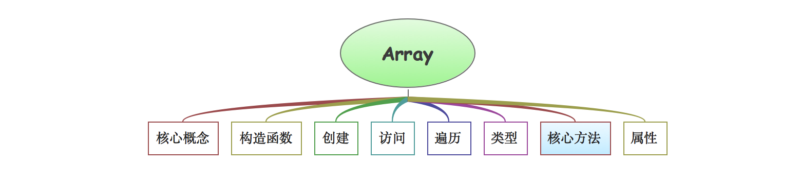
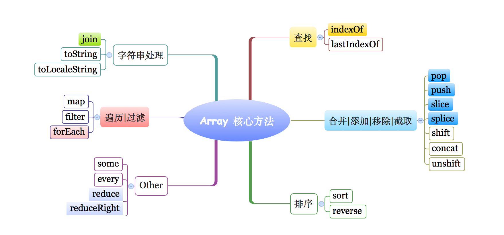

javaScript系列 [21]-Array
**数组核心概念**
在JavaScript语言中，数组的构造函数为
Array，如果我们使用typeof关键字来检查数组的类型会得到object的结果，这也从侧面说明了数组本质上是Object对象类型的数据，可以认为数组是特殊的对象(关于这一点，这篇文章将不做展开)。
1 | var arr = [1,2,3,90]; |
数组 数组是值的有序集合 譬如：[1,3,5,7,9] ，数组中的每个值称为元素。
索引 每个元素在数组中都有一个位置，用数字表示称为索引，索引值默认从 0 开始依次递增。
类型 JavaScript中的数组是无类型的( 数组元素可以是任意类型且允许存在不同类型的元素 )。
动态 JavaScript中的数组是动态的，会根据需要增长或缩减，无需提前声明大小且不用关心空间分配。
长度 JavaScript中每个数组都拥有 length属性，通常该属性的值为数组的长度。
备注 JavaScript中的数组是对象的特殊形式，但通常数组的实现是经过优化的，性能更好。
**数组的创建**
通常，创建数组有两种方式，一种是直接通过字面量的方式创建，一种是通过Array构造函数的方式创建，在具体写代码的时候又有一些注意点。
① 字面量方式创建数组
字面量(直接量)创建数组是最简单的方式，只需要直接使用[ ]并在中括号中设置数组元素即可。
1 |
|
② 使用构造函数创建数组
调用构造函数Array是创建数组的第二种方法，在调用构造函数的时候可以有多种方式。
语法 new Array() new Array(length) new Array(ele1,ele2,..)
1 | /*使用构造函数Array来创建数组实例*/ |
说明 在使用Array构造函数来创建数组的时候，如果没有传递参数，那么()可以被省略，这种情况下会初始化得到一个空的数组，如果仅仅传递一个参数且该参数是数值那么将会初始化得到一个指定长度的空数组(数组中每个元素值均为undefined)，调用构造函数Array的时候，new关键字可以省略。
**数组的访问以及length属性**
数组其实就是一组数据，我们对数组的可以有很多操作(添加、移除、排序、翻转、遍历等)，这些操作主要通过对应的方法和结构来实现，这里先简单介绍数组的length属性、索引下标访问。
我们可以直接通过下标(索引)来操作数组，这些操作包括添加、修改和读取。
1 | /*演示通过[下标]索引操作数组*/ |
在数组中 length 是一个可读可写的属性。当我们读取某个数组的length属性时，表示获取数组的长度(最大索引，特殊情况除外)。当我们对数组的length属性进行写操作的时候，会影响数组的结构。下面简单总结为两点：
❏ 为数组元素赋值的时候，如果它的索引i大于或等于当前长度，那么length值将设置为i + 1 ;
❏ 设置length属性小于当前长度的非负整数时，数组中那些索引值超出的元素将被删除。
1 | /*01-第一种情况 索引 >= 数组.length*/ |
**数组常用方法**
添加 | 移除 | 合并 | 截取操作
数组的合并方法 concat( )
语法 array.concat(value1,...)作用 concat()方法用来衔接(拼接合并)数组，会将合并后的新数组返回。参数 concat()方法的参数非常灵活可以是N个普通元素或者是数组。
1 | var arr = [1,2,3]; |
数组元素的添加 push( )和unshift( )
语法 array.push(value,...) array.unshift(value,...)说明 push()和unshift()这两个方法，它们均直接修改当前数组本身并返回最新的数组长度。作用 unshift()方法把元素插入到开头原本元素顺次后移，push()方法把元素追加到数组的屁股。
1 | /*数组的添加(插入操作)*/ |
数组元素的移除 pop( )和shift( )
语法 array.pop() array.shift()作用 array.pop()和array.shift()方法方法删除数组的最后一个(第一个)元素并返回删除项。说明 如果数组为空，那么它们不会修改数组本身而是直接返回undefined。
1 | var arr = ["苹果","橙子"]; |
数组的截取方法 slice( )
语法 array.slice( start,end )作用 slice()方法截取数组中指定的元素并保存到新数组中返回。说明 start和end参数均可以接收负数值(表示倒数)，end缺省表示默认截取到数组末尾。
1 | var arr1 = [18,"文顶顶","广州市","0415",true]; |
数组的插入、删除和替换方法 splice( )
语法 array.splice( start,deleteCount,value,...)作用 splice()将删除从start索引开始的零个或多个元素并使用参数列表中的值来替换它们。说明 在有必要时，数组中所有的元素都会移动以保持连续性，该方法修改的是数组本身。
1 | var arr = [18,"文顶顶","广州市","0415",true]; |
备注
splice()方法在使用的时候，如果传递的第二个参数值为0，那么表示插入操作。具体执行的时候，会把参数列表中的数据依次插入到指定索引位置，数组中已有的元素则顺序后移。
数组转换为字符串的操作
JavaScript中数组转换为字符串的相关方法主要有toString()、toLocaleString()以及join()，前两个方法用来把数组转换为字符串形式输出，join()方法把数组的元素按既定格式拼接后输出。
语法 array.toString() array.toLocaleString() array.join([separator])说明 toString()方法在执行的时候内部会分别拿到每个元素来调用toString方法，然后把结果以逗号的形式拼接成字符串返回，toLocaleString()方法和toString()用法一样，而且大多数情况下得到的结果是一致的，区别在于它每个元素调用的是toLocaleString方法。join()方法会先将数组的每个元素都转换为字符串，并通过在中间插入的 separator 字符串将它们衔接起来最后返回。注意 如果join()方法的separator参数缺省，那么默认为逗号和toString方法等价。
1 |
|
数组的遍历
JavaScript中数组的遍历有多种方式，我们可以用 for循环结构 来遍历数组，也可以使用专门遍历对象的 for..in结构，当然还有ES5推出的 forEach方法 ，下面将通过代码的方式一一介绍。
1 | /*01-for循环结构遍历数组*/ |
说明 上面介绍了遍历数组的三种方法，在开发中具体使用的时候具体选择使用哪种方式需要看特定的业务场景，需要注意的是在遍历数组的时候不建议使用 for..in 循环，这是因为 for..in 在使用的时候会枚举从原型中继承来的成员。 forEach()方法会按照索引从小到大来遍历数组，并对数组中的每一个元素调用一次回调函数。每次在调用回调函数的时候，带有三个参数可以简单表示为f(arr[i],i,arr),回调函数的返回值都会被忽略。此外，forEach()方法的语法有两种形式，这里列出。
语法 array.forEach(f) array.forEach(f,o)
如果在调用forEach()方法的时候指定了第二个参数
o，那么调用的时候函数的this将被绑定给o,若未指定第二个参数，那么回调函数中的this默认指向全局对象，在严格模式下this指向的是null。
数组的过滤和映射
语法 array.filter(predicate) array.filter(predicate,o)
数组的filter()方法用来对数组进行过滤，该方法返回一个只包含通过断言元素的新数组。filter()方法在执行的时候会按照索引从小到大的顺序来遍历数组，并对数组的每个元素都调用一次predicate断言函数。当每次调用该函数的时候，predicate断言函数都可以带有三个参数可以简单表示为predicate(arr[i],i,arr)，若函数返回真值，那么当前元素就会被添加到新创建的数组中。
1 | var arr = [18,5,"广州","0408",101,9,21]; |
语法 array.map(f) array.map(f,o)
数组的map()方法会根据f函数来计算每个元素并把它们返回组成一个新的数组，通常我们把这个方法称为数组映射方法。
1 | var arr = [18,5,"广州","0408",101,9,21]; |
数组计算的相关方法
这里将一起介绍数组中计算相关的四个方法，其中every()方法和some()方法用于对数组元素进行断言测试，而reduce()方法和reduceRight()方法则用于计算数组元素的值，它们常用于数值数组。
every()方法测试断言函数是否对每个元素均为真，some()方法测试是否有元素满足断言函数，这两个函数返回的结果为布尔类型值的 true 或 false , every()函数要求如果所有的元素都满足断言函数的测试条件，那么就返回true , 而some()方法只要有一个元素满足测试条件，那就返回 true 。
1 | var isAllEvenNumber1 = [2,4,6,8,10].every(function (value,index,arrT) { |
语法 array.reduce(f,[inital]) array.reduceRight(f,[inital])参数 参数f是一个函数，用于把两个值合并缩减为一个新值， 可选的inital是缩减的初始值。返回 返回的是数组的化简值，也就是最后一次调用f函数时的返回值。对比 reduceRight()方法在于它在进行缩减计算的时候按照索引从大到小的顺序执行。
1 |
|
数组的排序和翻转
JavaScript中的reverse()方法用于将数组的顺序颠倒过来，该方法操作的是原数组。
1 | var arr1 = [1,2,3,4]; |
如果需要对数组进行排序，那么可以使用sort()方法。sort()方法会在原数组中对数组元素进行排序而不创建新数组，sort()方法默认按照字符编码的顺序对元素进行排序，当然也可以提供比较函数来指定排序的方式。
1 | var arr1 = [33,4,1111,22,100]; |
排序函数 排序函数接收两个参数，这里是 a 和 b 它们依据函数的返回值来确定是升序还是降序排列。
数组元素的搜索
搜索说明 同string字符串类型一样，数组也提供了indexOf()和lastIndexOf()方法来实现元素的查找功能，它们的区别在于一个从前往后查找一个从后往前查找，如果在数组中找到指定的元素那么就返回对应的索引，如果没有找到那么就返回 -1 。
1 | var arr = [18,"文顶顶","北京市","Node",18]; |
在ES5之前，要通过代码判断一个数据是否是数组可能会比较麻烦。我们知道typeof关键字可用于检查数据的类型，譬如得到的是结果如果是 string那我们就能知道该数据是字符串，如果结果是 number那这个数据自然就是数字。
我们并不能通过 typeof 数组实例的方式来判断数组，因为你得到的结果将会是object，值得庆幸的是在ES5中，Array提供了isArray()函数来检查数组实例。
1 | /*01- typeof*/ |